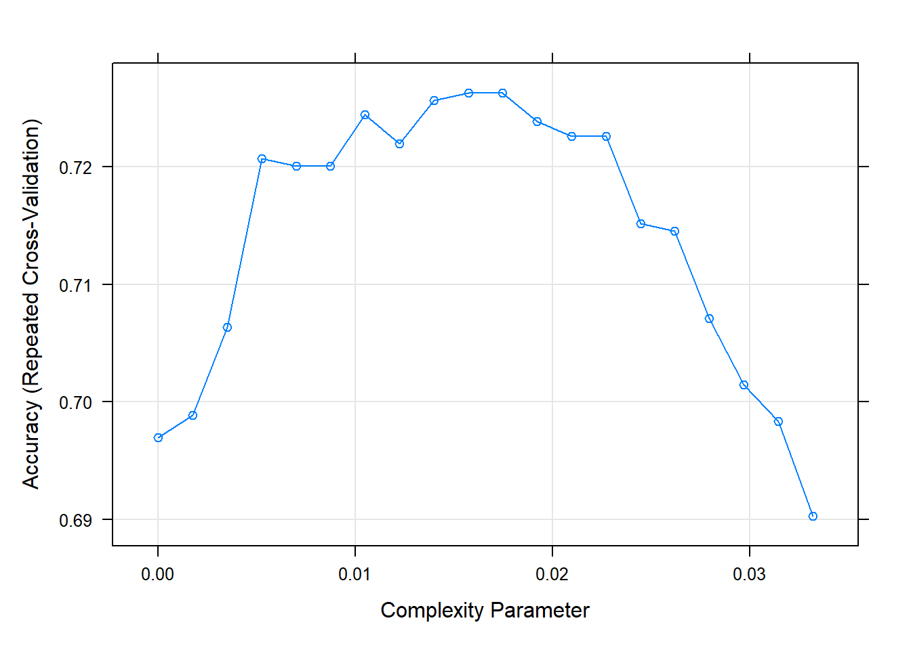

4.4 Train the model on the training set
Use rpart package and caret package
The following block may results in slightly different results on individual computers. The fitted models are in data folder
set.seed(999) #for reproducibility
cv_tree1 = train(Creditability ~ ., data = d_train1, trControl = cntrl1,
method = "rpart", tuneLength = 20, parms = list(split = "gini")) #using gini index
cv_tree2 = train(Creditability ~ ., data = d_train1, trControl = cntrl1,
method = "rpart", tuneLength = 20, parms = list(split = "information")) #using information The fitted models were saved afterwards as cv_tree1_gini.Rdata and cv_tree2_info.Rdata
Loading the fitted models to analyse
set.seed(999)
load("data/cv_tree1_gini.Rdata")
load("data/cv_tree2_info.Rdata")
# model fit 1
cv_tree1CART
802 samples
20 predictor
2 classes: '0', '1'
No pre-processing
Resampling: Cross-Validated (10 fold, repeated 2 times)
Summary of sample sizes: 721, 722, 722, 722, 722, 721, ...
Resampling results across tuning parameters:
cp Accuracy Kappa
0.000000000 0.6969830 0.2512465
0.001747106 0.6988580 0.2543412
0.003494213 0.7063349 0.2628946
0.005241319 0.7206867 0.2861502
0.006988425 0.7200540 0.2777666
0.008735532 0.7200617 0.2727974
0.010482638 0.7244367 0.2758523
0.012229744 0.7219444 0.2739317
0.013976851 0.7256636 0.2964605
0.015723957 0.7262886 0.2940382
0.017471064 0.7262886 0.2936297
0.019218170 0.7238272 0.2881274
0.020965276 0.7225926 0.2839374
0.022712383 0.7225926 0.2839374
0.024459489 0.7151466 0.2534916
0.026206595 0.7145370 0.2595461
0.027953702 0.7070833 0.2284884
0.029700808 0.7014583 0.2203101
0.031447914 0.6983565 0.1916670
0.033195021 0.6902701 0.1609005
Accuracy was used to select the optimal model using the largest value.
The final value used for the model was cp = 0.01747106.CART
802 samples
20 predictor
2 classes: '0', '1'
No pre-processing
Resampling: Cross-Validated (10 fold, repeated 2 times)
Summary of sample sizes: 721, 722, 722, 722, 721, 722, ...
Resampling results across tuning parameters:
cp Accuracy Kappa
0.000000000 0.6963735 0.2470114
0.001747106 0.7056867 0.2628565
0.003494213 0.7050849 0.2532738
0.005241319 0.7056867 0.2530103
0.006988425 0.7144290 0.2708436
0.008735532 0.7144290 0.2715985
0.010482638 0.7200540 0.2804530
0.012229744 0.7237654 0.2784178
0.013976851 0.7275154 0.2885322
0.015723957 0.7231404 0.2833342
0.017471064 0.7237731 0.2843818
0.019218170 0.7243981 0.2782958
0.020965276 0.7237886 0.2732868
0.022712383 0.7237886 0.2732868
0.024459489 0.7225386 0.2708625
0.026206595 0.7144136 0.2456549
0.027953702 0.7082022 0.2211492
0.029700808 0.7082022 0.2211492
0.031447914 0.7013580 0.1774435
0.033195021 0.6976080 0.1496378
Accuracy was used to select the optimal model using the largest value.
The final value used for the model was cp = 0.01397685.